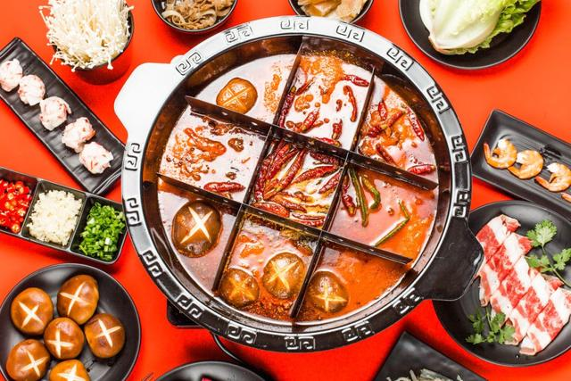

行动中的女孩们：“我们能做的还有很多”
原文链接 备份链接 距新型冠状肺炎疫情公开已经过去二十多天了，从最初的混乱和恐慌至今，人们似乎在一点点变得平静。生活的节奏被打乱，取而代之的是对 “非正常状态” 的逐渐习惯。对很多参与在捐助行动里的人也是，紧张感从没消失，只是变得可以适 …
2020-02-22 12:36 来源:中国新闻周刊
原标题：记疫情时期一次安全的火锅

记疫情时期一次安全的火锅
文/张丰
发于2020.2.24总第936期《中国新闻周刊》
2003年“非典”的时候，我正好在北京读书。学校封校了，有次我看到一对情侣隔着栏杆热吻，女孩在外面，口罩拿在手上。17年过去，这成为我对“非典”印象最深的一幕。我还记得当时这一幕给我的震撼，觉得这里面存在着一种本质性的东西。和爱相比，病毒的威力似乎没那么大了。
所以，当朋友邀请我去河边喝茶的时候，我马上就答应了。茶馆当然是没有营业了，我们选的地方在朋友小区外面河边的绿地上。我们在太阳光的笼罩下，也在社区工作人员的视野中。这个茶局，每次参加者只有三四个人，似乎并不算聚众。朋友早早在那里等候，从家里带出来茶具，一个简易小茶桌，还有一张野餐用的大垫子。参加者都戴着口罩而来。
我第二次去参加茶会的时候，发生了小小的事故。看到路边孤零零停了一辆车，车上还有人，我突然好奇这是不是“鄂”开头的车牌，车上的人会不会需要帮助，就扭头去看车牌。我戴着口罩，呼出的气息模糊了眼镜，突然就摔了出去，膝盖摔破了皮，胸部也重重撞了一下。然而并不是，是川A。那两天，我都有点担心，因为肺部有不适的症状。
不过，茶会并没有停。大家越来越重视这难得的“放风”了，喝茶变得很有仪式感，有人带来水果和点心。几乎每个人都带着书过来，让喝茶变成了小型读书会。和在手机里远程开会相比，在现实世界见到活生生的朋友，变得更加重要。对成都人来说，只要太阳还好，还能喝茶，似乎生活就还是原来的样子。
喝茶一直持续到晚上6点，四个人似乎都没有回家吃饭的意思。大家一合计，决定开车去街上找吃的。我们前往以前经常去的一个老小区，那里有几家非常好的“苍蝇馆子”，说不定会开门。然而去往那小区的通道都完全封闭了。
还好路上看到一家火锅店开着，最终我们选择了这里，吃到人生中最难忘的一次火锅。
进门的时候，每个人都要测量体温，然后在一张登记表上填上个人信息，包括姓名、电话和体温读数。我比朋友们都高了0.2，不过仍然在正常范围。进门之后，服务员拿来一个酒精喷瓶，为每双手都消了毒。
这家火锅店平常在成都只能算中下等，但是现在却因为拿到了开工许可，让人刮目相看。店里的客人并不多，上座率只有二三成，我们四个人轻易在靠窗的地方找到了座位。还不到晚上7点，天刚刚暗下来，平常堵得一塌糊涂的大街，现在车辆稀少，路边的行人也没几个。我们摘下口罩，怀着紧张而兴奋的心情坐了下来。大家都评价菜品很好，纷纷拍照留念。
吃了还不到半小时，服务员过来告诫我们，尽量不要说话。“疾病传染，主要是口对口传播，请专心吃吧。”我们这才注意到，本来不多的客人，有几桌已经买单走人了。我们也未敢享受太久，匆匆戴上口罩，买单离去。
这也是过去15年我在这个城市吃得最快的一次火锅，虽然略显简陋，但已经是难得的盛宴。我们所得到的幸福感，可能是平常吃火锅的两倍以上。这顿火锅吃出了豪情，让我们这些过了40岁的人，仿佛又回到了无忧无惧的青年时代。
相信这将是一顿非常安全的火锅。全部流程符合世卫组织和中国疾控中心的防疫建议，也符合成都市的管理规定，符合政府逐步有序恢复生产的精神。但它仍然像是一场超常规的戏剧。和病毒无关，也和疾病无关，我们通过努力，克服了内心的隔离状态，我们走向了人与人的团结。
本文作者系专栏作家，中产生活方式观察者返回搜狐，查看更多
责任编辑：
声明：该文观点仅代表作者本人，搜狐号系信息发布平台，搜狐仅提供信息存储空间服务。
原文链接 备份链接 距新型冠状肺炎疫情公开已经过去二十多天了，从最初的混乱和恐慌至今，人们似乎在一点点变得平静。生活的节奏被打乱，取而代之的是对 “非正常状态” 的逐渐习惯。对很多参与在捐助行动里的人也是，紧张感从没消失，只是变得可以适 …
原文链接 备份链接 2月19日。晴。 自从我一个月前离开武汉，对困守武汉的朋友，真的是“不忍相问”。我楼下的邻居，一家七人（四个大人三个孩子，最小的孩子才半岁），自20号至今，没出过门一步，我从不敢问他们生活的细节。他们在承担种种重厄，而 …
原文链接 备份链接 2月18日和19日，上海新冠肺炎确诊病例连续2天零增长。对于这个人口超过2400万的超大城市，消息令人振奋。 要帮助基层准确定位重点排查人群，入沪人员全数据的信息收集是重要的第一步。 上海复工的第一天，防控升级， …
原文链接 备份链接 无论是漩涡中心的武汉，还是看似平静的小城，人们正在通过游戏建立新的纽带。 _编辑_陈静2020年02月18日 15时33分 本文为今日头条“编舟计划”系列文章第13篇。 编舟计划，记录游戏与时代，只收集与游戏相关最优秀 …
原文链接 备份链接 在这样的大灾面前能感受到整个国家都发动起来了，航空公司、海关都给了很多便利。希望能有更多的慈善组织参与其中，每一个体都是渺小的，集合起来才能发挥更大的能量。 口述 | 晓 苏(化名) 整理 | 巴 伊 2月13日清 …